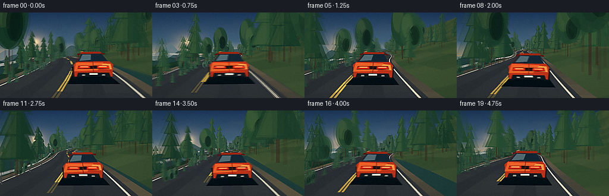
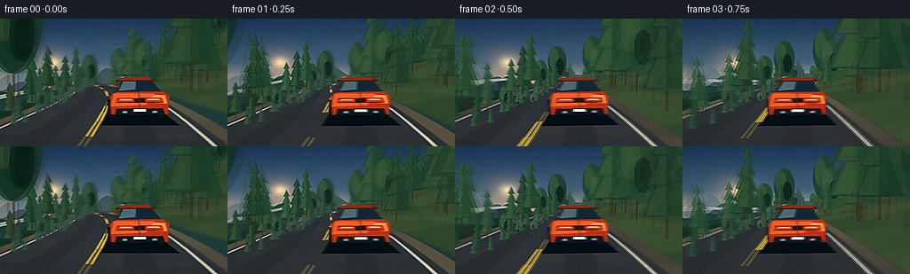

CODING AGENTS AS PIXEL WORLD MODELS
traex/DeepSeek-V4.1-Flash · instance_preservation_0029
点击播放 · 原生 RGB 像素
逐轮保存的候选
回放视频、检查图与代码变化。
每份候选均可单独播放。实际图片检查记录在下方工具轨迹中。
候选 01播放与检查图
点击播放 · 原生 RGB 像素


展开代码变化
--- 上一保存版本
+++ 本次保存版本
@@ -0,0 +1,717 @@
+"""Procedural chase-camera shot: a car on a winding mountain road.
+
+The renderer is intentionally self-contained: all geometry, motion, shading,
+and post-processing use Python, numpy, and Pillow only.
+"""
+
+from __future__ import annotations
+
+import math
+import random
+from dataclasses import dataclass
+from pathlib import Path
+
+import numpy as np
+from PIL import Image, ImageDraw, ImageFilter
+
+import artifact_io
+
+
+ROOT = Path(__file__).resolve().parent
+WIDTH = 256
+HEIGHT = 144
+FRAME_COUNT = 20
+FPS = 4.0
+SS = 3
+RW = WIDTH * SS
+RH = HEIGHT * SS
+
+WORLD_UP = np.array([0.0, 1.0, 0.0], dtype=np.float64)
+
+
+def clamp(value: float, low: float, high: float) -> float:
+ return max(low, min(high, value))
+
+
+def mix_color(a: tuple[int, int, int], b: tuple[int, int, int], t: float) -> tuple[int, int, int]:
+ t = clamp(t, 0.0, 1.0)
+ return tuple(int(round(a[i] + (b[i] - a[i]) * t)) for i in range(3))
+
+
+def shade(color: tuple[int, int, int], factor: float, lift: float = 0.0) -> tuple[int, int, int]:
+ return tuple(int(clamp(c * factor + lift, 0, 255)) for c in color)
+
+
+def normalized(vector: np.ndarray) -> np.ndarray:
+ length = float(np.linalg.norm(vector))
+ return vector / max(length, 1e-9)
+
+
+def road_center(s: float) -> np.ndarray:
+ """Centerline of a road that alternately sweeps across a mountainside."""
+ x = 8.8 * math.sin(s / 43.0) + 4.2 * math.sin(s / 23.0 + 1.1) + 1.7 * math.sin(s / 11.5 + 0.2)
+ y = 2.0 * math.sin(s / 54.0 + 0.7) + 0.62 * math.sin(s / 19.0)
+ return np.array([x, y, s], dtype=np.float64)
+
+
+def road_frame(s: float) -> tuple[np.ndarray, np.ndarray, np.ndarray, np.ndarray]:
+ eps = 0.08
+ center = road_center(s)
+ tangent = normalized(road_center(s + eps) - road_center(s - eps))
+ right = normalized(np.cross(WORLD_UP, tangent))
+ up = normalized(np.cross(tangent, right))
+ return center, tangent, right, up
+
+
+def lane_point(s: float, lateral: float = 1.45) -> np.ndarray:
+ center, _tangent, right, _up = road_frame(s)
+ return center + right * lateral
+
+
+def curvature(s: float) -> float:
+ a = road_center(s - 3.0)
+ b = road_center(s)
+ c = road_center(s + 3.0)
+ v1 = normalized(b - a)
+ v2 = normalized(c - b)
+ cross_y = v1[2] * v2[0] - v1[0] * v2[2]
+ return float(cross_y)
+
+
+def terrain_height(s: float, lateral: float) -> float:
+ base = road_center(s)[1]
+ d = max(0.0, abs(lateral) - 3.9)
+ ripple = 0.55 * math.sin(s * 0.071 + lateral * 0.16) + 0.24 * math.sin(s * 0.19 - lateral * 0.07)
+ if lateral < 0.0:
+ return base - 0.255 * d - 0.0075 * d * d + ripple
+ return base + 0.205 * d + 0.0048 * d * d + ripple
+
+
+@dataclass
+class Camera:
+ pos: np.ndarray
+ right: np.ndarray
+ up: np.ndarray
+ forward: np.ndarray
+ tan_x: float
+ tan_y: float
+ s: float
+
+
+def make_camera(s: float, time: float) -> Camera:
+ lateral = 1.45
+ pos = lane_point(s, lateral) + WORLD_UP * (1.82 + 0.018 * math.sin(time * 9.1))
+ target = lane_point(s + 21.0, lateral) + WORLD_UP * 0.88
+ forward = normalized(target - pos)
+ right = normalized(np.cross(WORLD_UP, forward))
+ up = normalized(np.cross(forward, right))
+
+ # A little banking and road vibration make the chase camera feel attached
+ # to the car without destabilizing the composition.
+ roll = clamp(curvature(s + 8.0) * 1.8, -0.018, 0.018)
+ roll += 0.0025 * math.sin(time * 13.0)
+ cr, sr = math.cos(roll), math.sin(roll)
+ right, up = right * cr + up * sr, -right * sr + up * cr
+
+ fovy = math.radians(44.0)
+ tan_y = math.tan(fovy * 0.5)
+ tan_x = tan_y * (RW / RH)
+ return Camera(pos, right, up, forward, tan_x, tan_y, s)
+
+
+def project(points: np.ndarray, camera: Camera) -> tuple[np.ndarray, np.ndarray]:
+ points = np.asarray(points, dtype=np.float64)
+ delta = points - camera.pos
+ x = delta @ camera.right
+ y = delta @ camera.up
+ z = delta @ camera.forward
+ safe_z = np.maximum(z, 0.035)
+ sx = (x / (safe_z * camera.tan_x) * 0.5 + 0.5) * RW
+ sy = (0.5 - y / (safe_z * camera.tan_y) * 0.5) * RH
+ return np.stack([sx, sy], axis=-1), z
+
+
+def project_one(point: np.ndarray, camera: Camera) -> tuple[np.ndarray, float]:
+ screen, depth = project(point[None, :], camera)
+ return screen[0], float(depth[0])
+
+
+def poly_visible(screen: np.ndarray, depth: np.ndarray, margin: float = 80.0) -> bool:
+ if np.any(depth <= 0.12):
+ return False
+ x = screen[:, 0]
+ y = screen[:, 1]
+ return bool(np.max(x) >= -margin and np.min(x) <= RW + margin and
+ np.max(y) >= -margin and np.min(y) <= RH + margin)
+
+
+def polygon(
+ draw: ImageDraw.ImageDraw,
+ points3d: list[np.ndarray] | np.ndarray,
+ camera: Camera,
+ color: tuple[int, int, int] | tuple[int, int, int, int],
+ outline: tuple[int, int, int, int] | None = None,
+ width: int = 1,
+) -> bool:
+ screen, depth = project(np.asarray(points3d), camera)
+ if not poly_visible(screen, depth):
+ return False
+ coords = [tuple(map(float, p)) for p in screen]
+ draw.polygon(coords, fill=color, outline=outline)
+ if outline is not None and width > 1:
+ draw.line(coords + [coords[0]], fill=outline, width=width, joint="curve")
+ return True
+
+
+def line3d(
+ draw: ImageDraw.ImageDraw,
+ points3d: list[np.ndarray] | np.ndarray,
+ camera: Camera,
+ color: tuple[int, int, int] | tuple[int, int, int, int],
+ width: int,
+) -> None:
+ screen, depth = project(np.asarray(points3d), camera)
+ for i in range(len(screen) - 1):
+ if depth[i] > 0.12 and depth[i + 1] > 0.12:
+ draw.line([tuple(screen[i]), tuple(screen[i + 1])], fill=color, width=width)
+
+
+def sky_background(camera: Camera, time: float) -> Image.Image:
+ yy = np.linspace(0.0, 1.0, RH, dtype=np.float32)[:, None]
+ top = np.array([35, 58, 91], dtype=np.float32)
+ mid = np.array([94, 129, 145], dtype=np.float32)
+ horizon = np.array([229, 184, 132], dtype=np.float32)
+ t = np.clip(yy / 0.58, 0.0, 1.0)
+ upper = top[None, :] * (1.0 - t) + mid[None, :] * t
+ t2 = np.clip((yy - 0.34) / 0.27, 0.0, 1.0)
+ colors = upper * (1.0 - t2) + horizon[None, :] * t2
+ image = np.repeat(colors[:, None, :], RW, axis=1)
+
+ # Warm low sun, slightly left of the road's vanishing point.
+ sx = RW * (0.23 + 0.008 * math.sin(camera.s * 0.012))
+ sy = RH * 0.34
+ xx = np.arange(RW, dtype=np.float32)[None, :]
+ yy_full = np.arange(RH, dtype=np.float32)[:, None]
+ dist = np.sqrt(((xx - sx) / (RW * 0.30)) ** 2 + ((yy_full - sy) / (RH * 0.35)) ** 2)
+ glow = np.exp(-(dist * 3.2) ** 2)
+ core = np.exp(-(dist * 8.5) ** 2)
+ image += glow[..., None] * np.array([64, 35, 12], dtype=np.float32)
+ image += core[..., None] * np.array([105, 78, 38], dtype=np.float32)
+
+ # Thin high clouds, stretched horizontally and kept behind the ridges.
+ cloud = Image.new("RGBA", (RW, RH), (0, 0, 0, 0))
+ cd = ImageDraw.Draw(cloud, "RGBA")
+ for i in range(7):
+ cy = RH * (0.12 + i * 0.033) + 8 * math.sin(i * 2.1 + time * 0.15)
+ cx = RW * (0.56 + 0.08 * math.sin(i * 1.7 + camera.s * 0.01))
+ cw = RW * (0.12 + 0.035 * (i % 3))
+ ch = RH * (0.008 + 0.004 * (i % 2))
+ cd.ellipse((cx - cw, cy - ch, cx + cw, cy + ch), fill=(236, 223, 207, 28))
+ cloud = cloud.filter(ImageFilter.GaussianBlur(4.0 * SS))
+ base = Image.fromarray(np.clip(image, 0, 255).astype(np.uint8), "RGB").convert("RGBA")
+ return Image.alpha_composite(base, cloud).convert("RGB")
+
+
+def mountain_layer(
+ canvas: Image.Image,
+ camera: Camera,
+ base_y: float,
+ height: float,
+ phase: float,
+ color: tuple[int, int, int],
+ alpha: int,
+ detail: int,
+) -> None:
+ overlay = Image.new("RGBA", canvas.size, (0, 0, 0, 0))
+ draw = ImageDraw.Draw(overlay, "RGBA")
+ points: list[tuple[float, float]] = []
+ x_step = max(4, RW // 180)
+ for x in range(-20, RW + 21, x_step):
+ u = x / RW
+ ridge = (
+ -height * (0.34 + 0.16 * math.sin(u * 8.1 + phase + detail * 0.7))
+ - height * 0.20 * math.sin(u * 19.0 - phase * 1.4 + detail)
+ - height * 0.09 * math.sin(u * 47.0 + phase * 2.1)
+ )
+ # Taper the ends so the mountain band feels continuous rather than cut.
+ edge = min(1.0, (u + 0.08) * 5.0, (1.08 - u) * 5.0)
+ points.append((x, base_y + ridge * max(0.2, edge)))
+ points += [(RW + 20, RH + 30), (-20, RH + 30)]
+ draw.polygon(points, fill=color + (alpha,))
+ canvas.alpha_composite(overlay)
+
+
+def draw_mountains(canvas: Image.Image, camera: Camera, time: float) -> None:
+ phase = camera.s * 0.022 + time * 0.07
+ mountain_layer(canvas, camera, RH * 0.535, RH * 0.24, phase + 0.3,
+ (91, 119, 132), 185, 1)
+ mountain_layer(canvas, camera, RH * 0.565, RH * 0.23, phase + 1.9,
+ (56, 83, 85), 220, 2)
+ mountain_layer(canvas, camera, RH * 0.595, RH * 0.19, phase + 3.8,
+ (34, 61, 57), 240, 3)
+
+ # Low mist catches the warm sky at the valley lip.
+ haze = Image.new("RGBA", canvas.size, (0, 0, 0, 0))
+ hd = ImageDraw.Draw(haze, "RGBA")
+ for i in range(8):
+ y = RH * (0.50 + i * 0.012)
+ hd.rectangle((0, y, RW, y + RH * 0.018), fill=(205, 187, 161, 7))
+ haze = haze.filter(ImageFilter.GaussianBlur(8 * SS))
+ canvas.alpha_composite(haze)
+
+
+def terrain_color(side: int, band: int, s: float) -> tuple[int, int, int]:
+ noise = 0.5 + 0.5 * math.sin(s * 0.37 + band * 1.9 + side * 2.2)
+ if side < 0:
+ base = mix_color((37, 70, 52), (60, 82, 55), 0.20 + 0.20 * noise)
+ return shade(base, 0.88 + 0.10 * noise)
+ base = mix_color((52, 76, 49), (82, 91, 55), 0.18 + 0.28 * noise)
+ return shade(base, 0.95 + 0.08 * noise)
+
+
+def draw_terrain(canvas: Image.Image, camera: Camera) -> None:
+ draw = ImageDraw.Draw(canvas, "RGBA")
+ s_far = camera.s + 142.0
+ s_near = camera.s - 12.0
+ step = 3.4
+ bands = [4.1, 7.0, 11.5, 18.0, 27.0, 39.0, 54.0]
+ s_values = np.arange(s_near, s_far + step, step)
+ # Painter order: distant slopes first, near slopes last.
+ for side in (-1, 1):
+ for band in range(len(bands) - 1, -1, -1):
+ inner_d = bands[band]
+ outer_d = bands[band + 1] if band + 1 < len(bands) else bands[band] + 18.0
+ for idx in range(len(s_values) - 2, -1, -1):
+ s0 = float(s_values[idx])
+ s1 = float(s_values[idx + 1])
+ p0, _t0, r0, _u0 = road_frame(s0)
+ p1, _t1, r1, _u1 = road_frame(s1)
+ li0 = inner_d * side
+ lo0 = outer_d * side
+ li1 = inner_d * side
+ lo1 = outer_d * side
+ v00 = p0 + r0 * li0 + WORLD_UP * (terrain_height(s0, li0) - p0[1])
+ v01 = p0 + r0 * lo0 + WORLD_UP * (terrain_height(s0, lo0) - p0[1])
+ v11 = p1 + r1 * lo1 + WORLD_UP * (terrain_height(s1, lo1) - p1[1])
+ v10 = p1 + r1 * li1 + WORLD_UP * (terrain_height(s1, li1) - p1[1])
+ color = terrain_color(side, band, s0)
+ # Darken the valley and add a warm rim on the upper cut slope.
+ if side < 0:
+ color = shade(color, 0.78)
+ else:
+ color = mix_color(color, (103, 103, 66), 0.08 * (band / 5.0))
+ polygon(draw, [v00, v01, v11, v10], camera, color)
+
+
+def road_color(s: float) -> tuple[int, int, int]:
+ grain = 0.5 + 0.5 * math.sin(s * 0.91) * math.sin(s * 0.23 + 1.2)
+ return (int(49 + 8 * grain), int(51 + 7 * grain), int(53 + 6 * grain))
+
+
+def draw_road(canvas: Image.Image, camera: Camera) -> None:
+ draw = ImageDraw.Draw(canvas, "RGBA")
+ s_near = camera.s - 3.0
+ s_far = camera.s + 138.0
+ step = 1.45
+ s_values = np.arange(s_near, s_far + step, step)
+ half_width = 3.55
+ edge = 3.27
+
+ for idx in range(len(s_values) - 2, -1, -1):
+ s0 = float(s_values[idx])
+ s1 = float(s_values[idx + 1])
+ c0, _t0, r0, _u0 = road_frame(s0)
+ c1, _t1, r1, _u1 = road_frame(s1)
+
+ # Gravel shoulder.
+ shoulder = mix_color((91, 86, 73), (119, 109, 86), 0.5 + 0.5 * math.sin(s0 * 0.35))
+ for side in (-1, 1):
+ polygon(
+ draw,
+ [c0 + r0 * (half_width * side), c0 + r0 * (4.15 * side),
+ c1 + r1 * (4.15 * side), c1 + r1 * (half_width * side)],
+ camera,
+ shade(shoulder, 0.82),
+ )
+
+ # Asphalt surface.
+ road_poly = [
+ c0 + r0 * (-half_width), c0 + r0 * half_width,
+ c1 + r1 * half_width, c1 + r1 * (-half_width),
+ ]
+ polygon(draw, road_poly, camera, road_color(s0))
+
+ # Broad tire-polish bands catch the low sun.
+ for lateral in (-1.45, 1.45):
+ polygon(
+ draw,
+ [c0 + r0 * (lateral - 0.46), c0 + r0 * (lateral + 0.46),
+ c1 + r1 * (lateral + 0.46), c1 + r1 * (lateral - 0.46)],
+ camera,
+ (47, 49, 51, 110),
+ )
+
+ # Solid edge lines.
+ for side in (-1, 1):
+ a = edge * side
+ b = (edge - 0.10 * side) * side
+ polygon(
+ draw,
+ [c0 + r0 * a, c0 + r0 * b, c1 + r1 * b, c1 + r1 * a],
+ camera,
+ (211, 208, 187, 228),
+ )
+
+ # Dashed warm center line, split around the dash cycle.
+ phase = s0 % 8.8
+ if phase < 3.9:
+ for lateral in (-0.075, 0.075):
+ polygon(
+ draw,
+ [c0 + r0 * (lateral - 0.045), c0 + r0 * (lateral + 0.045),
+ c1 + r1 * (lateral + 0.045), c1 + r1 * (lateral - 0.045)],
+ camera,
+ (222, 181, 71, 245),
+ )
+
+ draw_guardrail(canvas, camera)
+
+
+def draw_guardrail(canvas: Image.Image, camera: Camera) -> None:
+ draw = ImageDraw.Draw(canvas, "RGBA")
+ side = -1
+ offset = 4.05
+ s_near = camera.s - 2.0
+ s_far = camera.s + 88.0
+
+ # Posts every few meters, with a continuous rail above them.
+ for s in np.arange(s_near, s_far, 4.4):
+ c, _t, r, _u = road_frame(float(s))
+ base = c + r * (offset * side)
+ base[1] = terrain_height(float(s), offset * side) + 0.08
+ top = base + WORLD_UP * 0.86
+ w = r * 0.055
+ polygon(draw, [base - w, base + w, top + w, top - w], camera, (69, 72, 70, 255))
+
+ rail_points_top: list[np.ndarray] = []
+ rail_points_bottom: list[np.ndarray] = []
+ for s in np.arange(s_near, s_far, 1.4):
+ c, _t, r, _u = road_frame(float(s))
+ p = c + r * (offset * side)
+ p[1] = terrain_height(float(s), offset * side) + 0.74
+ rail_points_top.append(p + WORLD_UP * 0.12)
+ rail_points_bottom.append(p - WORLD_UP * 0.02)
+ for i in range(len(rail_points_top) - 1):
+ quad = [rail_points_top[i], rail_points_top[i + 1],
+ rail_points_bottom[i + 1], rail_points_bottom[i]]
+ screen, depth = project(np.asarray(quad), camera)
+ if poly_visible(screen, depth):
+ tint = 160 + int(18 * math.sin(i * 0.7))
+ draw.polygon([tuple(p) for p in screen],
+ fill=(tint, tint + 5, tint + 3, 245))
+ line3d(draw, quad, camera, (214, 215, 202, 180), max(1, SS // 2))
+
+
+@dataclass
+class Tree:
+ s: float
+ lateral: float
+ height: float
+ width: float
+ kind: str
+ tint: float
+
+
+def make_trees() -> list[Tree]:
+ rng = random.Random(1731)
+ trees: list[Tree] = []
+ for s in np.arange(-35.0, 340.0, 3.6):
+ for side in (-1, 1):
+ count = 2 if side > 0 else 2
+ for _ in range(count):
+ lateral = side * (5.0 + (rng.random() ** 1.45) * (35.0 if side < 0 else 27.0))
+ height = 5.8 + rng.random() * 9.2
+ if rng.random() < 0.18:
+ height *= 0.72
+ kind = "pine" if rng.random() < 0.82 else "broad"
+ width = height * (0.26 + rng.random() * 0.10)
+ trees.append(Tree(float(s + rng.uniform(-1.6, 1.6)), lateral, height,
+ width, kind, rng.uniform(-1.0, 1.0)))
+ return trees
+
+
+TREES = make_trees()
+
+
+def tree_color(tree: Tree, depth: float) -> tuple[int, int, int]:
+ far = clamp((depth - 14.0) / 110.0, 0.0, 1.0)
+ base = mix_color((25, 56, 40), (55, 91, 58), 0.45 + 0.2 * tree.tint)
+ base = mix_color(base, (78, 105, 104), far * 0.58)
+ return shade(base, 0.88 + 0.12 * (tree.tint + 1.0) * 0.5)
+
+
+def draw_tree(draw: ImageDraw.ImageDraw, camera: Camera, tree: Tree) -> None:
+ c, _t, r, _u = road_frame(tree.s)
+ base = c + r * tree.lateral
+ base[1] = terrain_height(tree.s, tree.lateral)
+ top = base + WORLD_UP * tree.height
+ screen_base, depth_base = project_one(base, camera)
+ screen_top, depth_top = project_one(top, camera)
+ if depth_base <= 0.5 or depth_base > 145.0:
+ return
+ if screen_base[1] < -RH * 0.2 or screen_top[1] > RH * 1.2:
+ return
+ px_per_m = RW / max(0.2, 2.0 * depth_base * camera.tan_x)
+ screen_height = abs(screen_base[1] - screen_top[1])
+ screen_width = max(1.2, tree.width * px_per_m)
+ if screen_width < 1.3 or screen_height < 2.0:
+ return
+ cx = screen_base[0]
+ ground_y = screen_base[1]
+ color = tree_color(tree, depth_base)
+ dark = shade(color, 0.62)
+ highlight = mix_color(color, (126, 144, 84), 0.22)
+
+ # Trunk, kept very thin so the silhouette reads as a conifer at speed.
+ trunk_w = max(1.0, screen_width * 0.075)
+ trunk_top = ground_y - screen_height * 0.52
+ draw.line([(cx, ground_y), (cx, trunk_top)], fill=shade((78, 58, 40), 0.8), width=max(1, int(trunk_w)))
+
+ if tree.kind == "broad" and screen_width > 3.0:
+ crown_y = ground_y - screen_height * 0.64
+ crown_w = screen_width * 0.78
+ crown_h = screen_height * 0.40
+ draw.ellipse((cx - crown_w, crown_y - crown_h, cx + crown_w, crown_y + crown_h),
+ fill=color)
+ draw.ellipse((cx - crown_w * 0.84, crown_y - crown_h * 0.88,
+ cx + crown_w * 0.15, crown_y + crown_h * 0.40),
+ fill=highlight)
+ draw.ellipse((cx - crown_w * 0.15, crown_y - crown_h * 0.25,
+ cx + crown_w * 0.72, crown_y + crown_h * 0.78),
+ fill=dark)
+ return
+
+ levels = 4
+ for level in range(levels):
+ frac = level / max(1, levels - 1)
+ layer_bottom = ground_y - screen_height * (0.14 + 0.19 * level)
+ layer_top = ground_y - screen_height * (0.53 + 0.115 * level)
+ half = screen_width * (0.53 - 0.29 * frac)
+ tri = [(cx - half, layer_bottom), (cx + half, layer_bottom), (cx, layer_top)]
+ draw.polygon(tri, fill=color)
+ if screen_width > 5.0:
+ highlight_tri = [
+ (cx - half * 0.82, layer_bottom - max(1.0, screen_height * 0.012)),
+ (cx - half * 0.04, layer_bottom - max(1.0, screen_height * 0.012)),
+ (cx, layer_top + max(1.0, screen_height * 0.035)),
+ ]
+ draw.polygon(highlight_tri, fill=highlight)
+ draw.line([(cx - half * 0.82, layer_bottom), (cx - half * 0.55, layer_bottom)],
+ fill=dark, width=max(1, int(SS * 0.45)))
+
+
+def draw_trees(canvas: Image.Image, camera: Camera) -> None:
+ draw = ImageDraw.Draw(canvas, "RGBA")
+ visible: list[tuple[float, Tree]] = []
+ for tree in TREES:
+ c, _t, r, _u = road_frame(tree.s)
+ p = c + r * tree.lateral
+ _screen, depth = project_one(p, camera)
+ if 0.8 < depth < 145.0:
+ visible.append((depth, tree))
+ visible.sort(key=lambda item: item[0], reverse=True)
+ for _depth, tree in visible:
+ draw_tree(draw, camera, tree)
+
+
+def car_point(camera: Camera, car_s: float, x: float, y: float, z: float) -> np.ndarray:
+ _c, _t, right, up = road_frame(car_s)
+ origin = lane_point(car_s, 1.45)
+ origin = origin + up * 0.17
+ return origin + right * x + up * y + _t * z
+
+
+def draw_car(canvas: Image.Image, camera: Camera, car_s: float, time: float) -> None:
+ draw = ImageDraw.Draw(canvas, "RGBA")
+ _c, tangent, right, up = road_frame(car_s)
+ origin = lane_point(car_s, 1.45)
+ origin[1] += 0.15 + 0.012 * math.sin(time * 10.3)
+
+ def p(x: float, y: float, z: float) -> np.ndarray:
+ return origin + right * x + up * y + tangent * z
+
+ # Ground shadow, layered to keep a soft edge after downsampling.
+ for k, alpha in ((1.00, 28), (0.80, 42), (0.60, 58)):
+ shadow = [p(-1.28 * k, -0.08, -2.24), p(1.28 * k, -0.08, -2.24),
+ p(1.08 * k, -0.08, 2.40), p(-1.08 * k, -0.08, 2.40)]
+ polygon(draw, shadow, camera, (12, 17, 19, alpha))
+
+ body = (182, 53, 28, 255)
+ body_dark = (91, 28, 21, 255)
+ body_light = (224, 94, 43, 255)
+ body_hot = (250, 142, 68, 255)
+ glass = (26, 41, 50, 255)
+ glass_light = (82, 105, 112, 255)
+ trim = (19, 22, 24, 255)
+
+ # Rear tires and fender shoulders.
+ for side in (-1, 1):
+ x = side * 0.96
+ tire = [p(x - 0.14, 0.02, -1.48), p(x + 0.14, 0.02, -1.48),
+ p(x + 0.17, 0.67, -1.48), p(x - 0.17, 0.67, -1.48)]
+ polygon(draw, tire, camera, trim)
+ polygon(draw, [p(side * 1.00, 0.14, -1.75), p(side * 1.04, 0.53, -1.73),
+ p(side * 0.98, 0.88, -1.55), p(side * 0.94, 0.33, -1.55)],
+ camera, body_dark)
+
+ # Main rear body and broad shoulder highlight.
+ rear_body = [
+ p(-0.93, 0.27, -2.16), p(0.93, 0.27, -2.16),
+ p(0.98, 0.86, -2.08), p(0.84, 1.00, -1.88),
+ p(-0.84, 1.00, -1.88), p(-0.98, 0.86, -2.08),
+ ]
+ polygon(draw, rear_body, camera, body)
+ polygon(draw, [p(-0.96, 0.54, -2.14), p(0.20, 0.58, -2.16),
+ p(0.52, 0.94, -2.01), p(-0.86, 0.96, -1.93)],
+ camera, body_light)
+ polygon(draw, [p(0.30, 0.68, -2.14), p(0.91, 0.62, -2.13),
+ p(0.87, 0.88, -2.03), p(0.50, 0.91, -2.03)],
+ camera, body_hot)
+
+ # Rear glass and roof; narrowing the glass gives the car a planted stance.
+ polygon(draw, [p(-0.76, 1.00, -1.93), p(0.76, 1.00, -1.93),
+ p(0.59, 1.37, -1.12), p(-0.59, 1.37, -1.12)],
+ camera, glass)
+ polygon(draw, [p(-0.69, 1.04, -1.88), p(-0.10, 1.08, -1.85),
+ p(-0.03, 1.32, -1.16), p(-0.52, 1.33, -1.18)],
+ camera, glass_light)
+ polygon(draw, [p(-0.59, 1.37, -1.12), p(0.59, 1.37, -1.12),
+ p(0.64, 1.47, -0.54), p(-0.64, 1.47, -0.54)],
+ camera, shade(body, 0.82))
+ polygon(draw, [p(-0.82, 0.95, -1.82), p(-0.68, 1.39, -1.06),
+ p(-0.67, 1.44, -0.52), p(-0.90, 0.90, -1.30)],
+ camera, body_dark)
+
+ # Rear light bar, twin lamps, and the dark diffuser.
+ polygon(draw, [p(-0.78, 0.67, -2.18), p(0.78, 0.67, -2.18),
+ p(0.73, 0.82, -2.13), p(-0.73, 0.82, -2.13)],
+ camera, (45, 20, 18, 255))
+ for side in (-1, 1):
+ polygon(draw, [p(side * 0.18, 0.70, -2.195), p(side * 0.77, 0.69, -2.19),
+ p(side * 0.70, 0.81, -2.15), p(side * 0.19, 0.81, -2.155)],
+ camera, (242, 38, 20, 255))
+ polygon(draw, [p(side * 0.25, 0.755, -2.202), p(side * 0.66, 0.748, -2.198),
+ p(side * 0.63, 0.79, -2.18), p(side * 0.27, 0.79, -2.18)],
+ camera, (255, 169, 100, 255))
+
+ polygon(draw, [p(-0.83, 0.27, -2.18), p(0.83, 0.27, -2.18),
+ p(0.76, 0.47, -2.16), p(-0.76, 0.47, -2.16)],
+ camera, (24, 27, 29, 255))
+ for x in (-0.49, 0.49):
+ polygon(draw, [p(x - 0.075, 0.33, -2.19), p(x + 0.075, 0.33, -2.19),
+ p(x + 0.07, 0.39, -2.185), p(x - 0.07, 0.39, -2.185)],
+ camera, (142, 145, 136, 255))
+
+ # License plate and a fine center seam keep the rear readable at 144p.
+ polygon(draw, [p(-0.20, 0.37, -2.205), p(0.20, 0.37, -2.205),
+ p(0.20, 0.45, -2.19), p(-0.20, 0.45, -2.19)],
+ camera, (212, 215, 196, 255))
+ line3d(draw, [p(0, 0.49, -2.19), p(0, 0.99, -1.95)], camera, (118, 35, 22, 220), SS)
+
+ # Side mirrors and roof edge highlights.
+ for side in (-1, 1):
+ polygon(draw, [p(side * 0.63, 1.31, -0.90), p(side * 0.84, 1.28, -0.82),
+ p(side * 0.83, 1.38, -0.75), p(side * 0.64, 1.38, -0.80)],
+ camera, body_dark)
+ line3d(draw, [p(-0.62, 1.47, -0.54), p(-0.48, 1.51, -0.30)],
+ camera, (244, 147, 75, 255), SS)
+
+
+def road_fog(canvas: Image.Image, camera: Camera) -> None:
+ overlay = Image.new("RGBA", canvas.size, (0, 0, 0, 0))
+ draw = ImageDraw.Draw(overlay, "RGBA")
+ for s in np.arange(camera.s + 55.0, camera.s + 125.0, 9.0):
+ c, _t, r, _u = road_frame(float(s))
+ p = c + WORLD_UP * 0.35
+ screen, depth = project_one(p, camera)
+ if depth > 0:
+ radius = max(8.0, RW * 1.7 / depth)
+ alpha = int(clamp((depth - 50.0) * 0.9, 3, 18))
+ draw.ellipse((screen[0] - radius, screen[1] - radius * 0.18,
+ screen[0] + radius, screen[1] + radius * 0.18),
+ fill=(211, 204, 187, alpha))
+ overlay = overlay.filter(ImageFilter.GaussianBlur(4.0 * SS))
+ canvas.alpha_composite(overlay)
+
+
+def render_sample(car_s: float, sample_time: float) -> Image.Image:
+ camera = make_camera(car_s - 7.2, sample_time)
+ canvas = sky_background(camera, sample_time).convert("RGBA")
+ draw_mountains(canvas, camera, sample_time)
+ draw_terrain(canvas, camera)
+ draw_road(canvas, camera)
+ draw_trees(canvas, camera)
+ draw_car(canvas, camera, car_s, sample_time)
+ road_fog(canvas, camera)
+ return canvas.convert("RGB")
+
+
+def post_process(frame: Image.Image, frame_index: int) -> np.ndarray:
+ frame = frame.resize((WIDTH, HEIGHT), Image.Resampling.LANCZOS)
+ frame = frame.filter(ImageFilter.UnsharpMask(radius=1.0, percent=115, threshold=2))
+ arr = np.asarray(frame, dtype=np.float32)
+
+ # Gentle teal-shadow / amber-highlight grade.
+ luminance = arr @ np.array([0.2126, 0.7152, 0.0722], dtype=np.float32)
+ shadows = np.clip(1.0 - luminance / 96.0, 0.0, 1.0)[..., None]
+ highlights = np.clip((luminance - 128.0) / 127.0, 0.0, 1.0)[..., None]
+ arr += shadows * np.array([-5.0, 3.0, 7.0], dtype=np.float32)
+ arr += highlights * np.array([8.0, 3.0, -3.0], dtype=np.float32)
+ arr = (arr - 128.0) * 1.045 + 128.0
+
+ # Sparse, fixed film grain avoids flat gradients without distracting flicker.
+ rng = np.random.default_rng(880 + frame_index)
+ grain = rng.normal(0.0, 1.6, (HEIGHT, WIDTH, 1)).astype(np.float32)
+ arr += grain
+
+ yy, xx = np.mgrid[0:HEIGHT, 0:WIDTH]
+ nx = (xx - WIDTH * 0.5) / (WIDTH * 0.5)
+ ny = (yy - HEIGHT * 0.5) / (HEIGHT * 0.5)
+ vignette = 1.0 - 0.075 * np.clip((nx * nx * 0.72 + ny * ny * 0.56), 0.0, 1.0)
+ arr *= vignette[..., None]
+ return np.clip(arr, 0, 255).astype(np.uint8)
+
+
+def make_frame(frame_index: int) -> np.ndarray:
+ time = frame_index / FPS
+ car_s = 21.0 + 22.0 * time + 0.55 * math.sin(time * 0.9)
+ # Three shutter samples are cheap at this resolution and give the fast
+ # roadside trees a directional streak while the chase car stays crisp.
+ shutter = 0.050
+ offsets = (-shutter, 0.0, shutter)
+ weights = (0.22, 0.56, 0.22)
+ accum = np.zeros((RH, RW, 3), dtype=np.float32)
+ for offset, weight in zip(offsets, weights):
+ sample_s = car_s + 22.0 * offset
+ sample = render_sample(sample_s, time + offset)
+ accum += np.asarray(sample, dtype=np.float32) * weight
+ blended = Image.fromarray(np.clip(accum, 0, 255).astype(np.uint8), "RGB")
+
+ # A restrained taillight/sun bloom ties the car into the low-light scene.
+ bright = np.asarray(blended, dtype=np.float32)
+ mask = np.clip((bright.max(axis=2) - 188.0) / 67.0, 0.0, 1.0)
+ glow_img = Image.fromarray((mask * 255).astype(np.uint8), "L").filter(ImageFilter.GaussianBlur(3.0 * SS))
+ glow = np.asarray(glow_img, dtype=np.float32) / 255.0
+ bright += glow[..., None] * np.array([18.0, 8.0, 2.0], dtype=np.float32)
+ blended = Image.fromarray(np.clip(bright, 0, 255).astype(np.uint8), "RGB")
+ return post_process(blended, frame_index)
+
+
+def main() -> None:
+ frames = np.stack([make_frame(i) for i in range(FRAME_COUNT)], axis=0)
+ artifact_io.save(frames, ROOT)
+ print(f"saved {frames.shape} RGB frames to {ROOT}")
+
+
+if __name__ == "__main__":
+ main()
可观测工具轨迹
实际执行的命令与返回图片。
命令 1exit 0
/bin/bash -c 'cat prompt.txt'
命令 2exit 0
/bin/bash -c 'cat GENERATION_RULES.md'
命令 3exit 0
/bin/bash -c 'cat task_spec.json'
命令 4exit 0
/bin/bash -c "find . -maxdepth 2 -type f -printf '%p\\n' | sort | head -200"
命令 5exit 0
/bin/bash -c "sed -n '1,240p' artifact_io.py"
命令 6exit 0
/bin/bash -c "sed -n '1,240p' player_template.html"
命令 7exit 0
/bin/bash -c "python - <<'PY'
import sys, numpy, PIL
print(sys.version)
print('numpy', numpy.__version__)
print('PIL', PIL.__version__)
try:
import scipy; print('scipy', scipy.__version__)
except Exception as e: print('no scipy',e)
PY"命令 8exit 0
/bin/bash -c 'python generate.py'
命令 9exit 0
/bin/bash -c 'which chafa || true; which viu || true; which jp2 || true; which img2txt || true'
命令 10exit 0
/bin/bash -c 'ls -lh pixels.npz frames/*.png inspection.png transition_check.png index.html | tail -30'
命令 11exit 0
/bin/bash -c "python - <<'PY'
from PIL import Image
import numpy as np
for i in [0,5,10,15,19]:
a=np.array(Image.open(f'frames/{i:02d}.png'))
print(i, 'mean',a.mean((0,1)).round(1), 'std',a.std().round(1), 'dark%',(a.mean(2)<25).mean().round(3))
PY"命令 12exit 0
/bin/bash -c "python - <<'PY'
from PIL import Image
import numpy as np
for i in [0,5,10,15,19]:
a=np.array(Image.open(f'frames/{i:02d}.png')).astype(float)
r,g,b=a[...,0],a[...,1],a[...,2]
mask=(r>100)&(r>g*1.45)&(r>b*1.45)&(g<125)
ys,xs=np.where(mask)
print(i,'red bbox', (xs.min(),ys.min(),xs.max(),ys.max()) if len(xs) else None,'n',len(xs))
# sky / mountain bands mean row colors at x=128
print('row',[(y,a[y,128].astype(int).tolist()) for y in [10,30,50,65,80,100,120,138]])
PY"命令 13exit 0
/bin/bash -c "python - <<'PY'
from PIL import Image
import numpy as np
im=np.array(Image.open('frames/00.png').resize((64,36)))
# map dominant visual classes to chars
for row in im:
s=''
for r,g,b in row:
if r>130 and r>g*1.35 and r>b*1.3: c='R'
elif r>180 and g>150 and b<140: c='o'
elif r>145 and g>145 and b>135: c='W'
elif b>g*1.10 and b>r*1.20: c='S'
elif g>r*1.25 and g>b*1.05: c='G'
elif b>g*1.05 and g>r*1.12: c='T'
elif max(r,g,b)<35: c='#'
elif abs(r-g)<12 and abs(g-b)<12: c='a'
elif g>r and b>r: c='t'
elif r>g*1.15 and g>b*1.15: c='d'
else: c='.'
s+=c
print(s)
PY"命令 14exit 0
/bin/bash -c "python - <<'PY'
from PIL import Image, ImageOps, ImageFilter
import numpy as np
chars=' .,:;irsXA253hMHGS#9B&@'
for fi in [0,10,19]:
im=Image.open(f'frames/{fi:02d}.png').convert('L').resize((80,45))
a=np.asarray(im).astype(float)
# local contrast and absolute luminance blend
print('\\nFRAME',fi)
for row in a:
print(''.join(chars[min(len(chars)-1,int(v/256*len(chars)))] for v in row))
PY"命令 15exit 0
/bin/bash -c 'python -m py_compile generate.py && git status --short 2>/dev/null || true'
命令 16exit 0
/bin/bash -c "python - <<'PY'
from PIL import Image
import numpy as np
for i in range(20):
a=np.asarray(Image.open(f'frames/{i:02d}.png')).astype(np.int16)
r,g,b=a[...,0],a[...,1],a[...,2]
mask=(r>95)&(r>g*1.35)&(r>b*1.35)&(g<135)
ys,xs=np.where(mask)
print(f'{i:02d}: car=({xs.mean():.1f},{ys.mean():.1f}) area={len(xs):4d} bbox={xs.min()},{ys.min()},{xs.max()},{ys.max()}')
PY"命令 17exit 0
/bin/bash -c "python - <<'PY'
import json
from pathlib import Path
import numpy as np
from PIL import Image
root=Path('.')
spec=json.loads((root/'task_spec.json').read_text())
data=np.load(root/'pixels.npz')['pixels']
print('packed',data.shape,data.dtype)
frames=np.stack([np.array(Image.open(root/'frames'/f'{i:02d}.png')) for i in range(spec['frames'])])
print('frames',frames.shape,frames.dtype)
print('mean step abs diff',np.abs(frames[1:].astype(np.int16)-frames[:-1].astype(np.int16)).mean().round(2))
print('unique colors / frame',np.median([len(np.unique(f.reshape(-1,3),axis=0)) for f in frames]))
print('html bytes',(root/'index.html').stat().st_size,'player ready marker', '__pixelReady' in (root/'index.html').read_text())
# Verify decoded RGB values agree with PNG files.
packed=data.transpose(2,0,1)
dec=np.stack([(packed>>16)&255,(packed>>8)&255,packed&255],axis=-1)
print('artifact match',np.array_equal(dec,frames))
PY"保存候选 1 份；完成命令 17 次；可验证图片返回 0 张。原始 API 响应与完整日志保留在本地。